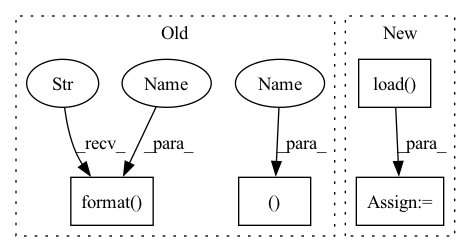

Pattern ID :5398

Before Change
// evaluate on test set
model_1_ema.load_state_dict(torch.load(logger.get_checkpoint_path("best")))
print("Test on target domain:")
_, test_mAP = validate(test_loader, model_1_ema, target_dataset.query, target_dataset.gallery, device,
cmc_flag=True, rerank=args.rerank)
print("test mAP on target = {}".format(test_mAP))
print("oracle mAP on target = {}".format(best_test_mAP))
logger.close()
After Change
// optionally resume from a checkpoint
if args.resume:
checkpoint = torch.load(args.resume, map_location="cpu")
model_1.load_state_dict(checkpoint["model_1"])
model_1_ema.load_state_dict(checkpoint["model_1_ema"])
model_2.load_state_dict(checkpoint["model_2"])
model_2_ema.load_state_dict(checkpoint["model_2_ema"])
In pattern: SUPERPATTERN
Frequency: 4
Non-data size: 4
Instances
Fragment ID: 19199984
Project Name: thuml/transfer-learning-library
Commit Name: 91cc646b6e3c004ef8e2aba07ee26ef7b652116f
Time: 2021-09-03
Author: chenbx18@mails.tsinghua.edu.cn
File Name: examples/domain_adaptation/reid/mmt.py
M Class Name: AnonimousClass
N Class Name: AnonimousClass
M Method Name: main(1)
N Method Name: main(1)
M Parent Class:
N Parent Class:
M File Name: examples/domain_adaptation/reid/mmt.py
N File Name: examples/domain_adaptation/reid/mmt.py
M Start Line: 39
M End Line: 164
N Start Line: 120
N End Line: 173
'>
Before Change
// evaluate on test set
model.load_state_dict(torch.load(logger.get_checkpoint_path("best")))
print("Test on target domain:")
_, test_mAP = validate(test_loader, model, target_dataset.query, target_dataset.gallery, device,
cmc_flag=True, rerank=args.rerank)
print("test mAP on target = {}".format(test_mAP))
logger.close()
After Change
// optionally resume from a checkpoint
if args.resume:
checkpoint = torch.load(args.resume, map_location="cpu")
model.load_state_dict(checkpoint["model"])
args.start_epoch = checkpoint["epoch"] + 1
// start training
'>
Fragment ID: 19199980
Project Name: thuml/transfer-learning-library
Commit Name: 91cc646b6e3c004ef8e2aba07ee26ef7b652116f
Time: 2021-09-03
Author: chenbx18@mails.tsinghua.edu.cn
File Name: examples/domain_adaptation/reid/baseline_cluster.py
M Class Name: AnonimousClass
N Class Name: AnonimousClass
M Method Name: main(1)
N Method Name: main(1)
M Parent Class:
N Parent Class:
M File Name: examples/domain_adaptation/reid/baseline_cluster.py
N File Name: examples/domain_adaptation/reid/baseline_cluster.py
M Start Line: 37
M End Line: 156
N Start Line: 89
N End Line: 162
'>
Before Change
// evaluate on test set
model_1_ema.load_state_dict(torch.load(logger.get_checkpoint_path("best")))
print("Test on target domain:")
_, test_mAP = validate(test_loader, model_1_ema, target_dataset.query, target_dataset.gallery, device,
cmc_flag=True, rerank=args.rerank)
print("test mAP on target = {}".format(test_mAP))
print("oracle mAP on target = {}".format(best_test_mAP))
logger.close()
After Change
// optionally resume from a checkpoint
if args.resume:
checkpoint = torch.load(args.resume, map_location="cpu")
model_1.load_state_dict(checkpoint["model_1"])
model_1_ema.load_state_dict(checkpoint["model_1_ema"])
model_2.load_state_dict(checkpoint["model_2"])
model_2_ema.load_state_dict(checkpoint["model_2_ema"])
args.start_epoch = checkpoint["epoch"] + 1
// start training
best_test_mAP = 0.
'>
Fragment ID: 19199982
Project Name: thuml/transfer-learning-library
Commit Name: 91cc646b6e3c004ef8e2aba07ee26ef7b652116f
Time: 2021-09-03
Author: chenbx18@mails.tsinghua.edu.cn
File Name: examples/domain_adaptation/reid/mmt.py
M Class Name: AnonimousClass
N Class Name: AnonimousClass
M Method Name: main(1)
N Method Name: main(1)
M Parent Class:
N Parent Class:
M File Name: examples/domain_adaptation/reid/mmt.py
N File Name: examples/domain_adaptation/reid/mmt.py
M Start Line: 39
M End Line: 164
N Start Line: 120
N End Line: 173
'>
Before Change
return (text, spec, wav, sid, emo)
def get_audio(self, filename):
audio, sampling_rate = load_wav_to_torch(filename)
if sampling_rate != self.sampling_rate:
raise ValueError("{} {} SR doesn"t match target {} SR".format(
sampling_rate, self.sampling_rate))
audio_norm = audio / self.max_wav_value
audio_norm = audio_norm.unsqueeze(0)
spec = spectrogram(audio_norm, self.filter_length, self.hop_length, self.win_length,
After Change
def get_audio(self, filename):
// Load preprocessed wav npy instead of reading from wav file
audio = torch.FloatTensor(np.load(filename))
audio_norm = audio.unsqueeze(0)
spec_filename = filename.replace(".wav", ".spec")
if os.path.exists(spec_filename):
'>
Fragment ID: 19199983
Project Name: babysor/mockingbird
Commit Name: 5c17fc8bb0faa4a8c029c16d13c41525d636d0f8
Time: 2023-02-17
Author: babysor00@gmail.com
File Name: models/synthesizer/vits_dataset.py
M Class Name: VitsDataset
N Class Name: VitsDataset
M Method Name: get_audio(2)
N Method Name: get_audio(2)
M Parent Class: torch.utils.data.Dataset
N Parent Class: torch.utils.data.Dataset
M File Name: models/synthesizer/vits_dataset.py
N File Name: models/synthesizer/vits_dataset.py
M Start Line: 87
M End Line: 94
N Start Line: 74
N End Line: 84